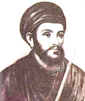

| சதுரகராதி - முதலாவது பெயரகராதி |
|
கிடைப்பதற்கு அரியது என நாங்கள் எண்ணிக் கொண்டு தேடுதல் பணியில் ஈடுபட்டிருந்த போது அதன் மின்னூலை எங்களுக்கு அனுப்பி தந்த ரோஜா முத்தையா ஆராய்ச்சி நூலகத்தின் சுந்தர் அவர்களுக்கும் அதன் அச்சிடப்பட்ட பிரதியை அனுப்பித் தந்த மதுரை சார்ந்த திருமிகு மருத்துவர் ஜோதிக்குமார் அவர்களுக்கும் எங்களின் நன்றி  வீரமாமுனிவர் (நவம்பர் 8, 1680 - பெப்ரவரி 4, 1742) ஆனால் வீரமாமுனிவரின் சதுரகராதி 1732 நவம்பர் திங்கள் 21 அன்றே நிறைவுற்றதை சதுரகராதியின் தொகுப்பின் முடிவில் குறிப்பிட்டுள்ளார். எனில் ஆங்கில அகராதிகளின் ஆதிமுதல் அகராதி வெளிவருவதற்கு 23 வருடங்களுக்கு முன்பே வீரமாமுனிவர் தமிழிற்கென்று தனியான அகராதியை வெளியிட்டு விட்டார் என்பது வரலாற்றின் மறைந்து போன பக்கங்களில் ஒன்று, Thesaurus என்னும் இலத்தீன் சொல்லைப் பயன்படுத்தி, சதுரகராதியைக் கருவூலம் என்று வீரமாமுனிவர் குறிப்பிடுவது இங்கே பொருத்திப் பார்க்கத்தக்கது. தேடும் சொல்லுக்குப் பொருள் தருவது அகராதி. ஒத்த கருத்துடைய சொற்களை ஓரிடத்தில் சேர்த்துக் கொடுப்பது கருவூலம். ஆகும். சதுரகராதியில் ஒவ்வொரு பொருளுக்கும் பற்பல கோணங்களிலிருந்து விளக்கம் கொடுக்கப்பட்டுள்ளது. மேலும் நெடில், கீழெதுகை, தொடைப்பதம், அனுபந்த அகராதி என்ற உட்பிரிவுகளும் இதில் இடம் பெற்றுள்ளன. செய்யுள் வடிவில் அமைந்த நிகண்டுகளிலிருந்து தமிழரை விடுவித்து, எதுகை தேடி சொற்பொருள் காணும் சிரமம் தவிர்த்து, அகர வரிசையில் எளிதாக பொருள் காண முனிவர் வழிசெய்தார். சதுரகராதியில் பெயர்ச் சொற்களாக ஏறக்குறைய 12 ஆயிரம் சொற்கள் உண்டு. பிற்காலத்தில் தோன்றிய எண்ணிறந்த தமிழ் அகராதிகளுக்கு முன்னோடியாக அமைந்தது சதுரகராதி. 1732இல் முதல்முறை வெளியானதிலிருந்து சதுரகராதி பல முறை பதிக்கப்பட்டுள்ளது. இத்தாலி நாட்டிலுள்ள கேசுதிகிலியோன் என்னும் இடத்தில் பிறந்தார். இவரின் இயற்பெயர் - கான்ஸ்டன்டைன் ஜோசப் பெஸ்கி (Constantine Joseph Beschi). இவர் இயேசு சபையைச் சேர்ந்த குரு ஆவார். கிறித்தவ மதத்தைப் பரப்பும் நோக்கில், 1709ஆம் ஆண்டு இயேசுசபைப் குருவானபின், இவர் லிஸ்பனில் இருந்து புறப்பட்டு 1710 சூனில் கிறித்தவ மதம் பரப்பு பணி செய்ய கோவா வந்து சேர்ந்தார். சில நாட்கள் கோவாவில் தங்கியவர், தமிழ்நாடு செல்ல உத்தேசித்து, கொச்சி வந்து அங்கிருந்து கால்நடையாக அம்பலக்காடு வந்து தங்கி; மதுரையில் காமநாயக்கன்பட்டி வந்து சேர்ந்தார். மறை பரப்பு முயற்சிக்காக முதலில் தமிழைக் கற்றுக்கொண்ட இவர், தமிழில் வியத்தகு புலமை பெற்று இலக்கணம், இலக்கியம், அகராதி படைத்து தமிழுக்குச் செழுமையூட்டினார். தமது பெயரினை தைரியநாதன் என்று முதலில் மாற்றிக் கொண்டார். பின்னர், அப்பெயர் வடமொழி என்பதாலும், நன்கு தமிழ் கற்றதாலும், தமது இயற்பெயரின் பொருளைத் தழுவி, செந்தமிழில் வீரமாமுனிவர் என மாற்றிக் கொண்டார். இவர் தமிழகம் வந்தபின், சுப்பிரதீபக் கவிராயரிடம் தமிழ் இலக்கண, இலக்கியம் கற்று, இலக்கியப் பேருரைகள் நடத்துமளவுக்குப் புலமை பெற்றார். இலக்கியச் சுவடிகளைப் பல இடங்கள் சென்று தேடி எடுத்ததால்; "சுவடி தேடும் சாமியார்" எனவும் அழைக்கப்பட்டார். தமிழின் சிறப்பை மேல் நாட்டார் உணர திருக்குறள், தேவாரம், திருப்புகழ், நன்னூல், ஆத்திசூடி போன்ற நூல்களை பிற ஐரோப்பிய மொழியில் வெளியிட்டார். தமிழ் கற்க ஏதுவாக தமிழ் - லத்தீன் அகராதியை உருவாக்கினார். அதில் 1000 தமிழ்ச் சொற்களுக்கு லத்தீன் விளக்கம் அளிக்கப்பட்டது. இதுவே முதல் தமிழ் அகரமுதலி ஆகும். பின்பு 4400 சொற்களைக் கொண்ட தமிழ்-போத்துக்கீய அகராதியை உருவாக்கினார். அக்காலத்தில் சுவடிகளில் மெய்யெழுத்துகளுக்கு புள்ளி வைக்காமலே எழுதுவது வழக்கம். புள்ளிக்குப் ஈடாக நீண்ட கோடிருக்கும். மேலும் குறில், நெடில் விளக்க என்று துணைக்காலைச் சேர்த்தேழுதுவது வழக்கம். "ஆ" என எழுத "அர" என 2 எழுத்துக்கள் வழக்கிலிருந்தது. (அ:அர, எ:எர) இந்த நிலையை மாற்றி "ஆ, ஏ" என மாறுதல் செய்தவர் இவர். சதுரகராதி: பொருள் என்ன? சதுகராதி பெயர் அகராதி, பொருள் அகராதி, தொகை அகராதி, தொடை அகராதி என்னும் நான்கு பிரிவுகளைக் கொண்டுள்ளது. பெயர் அகராதியில் சொற்பொருளும், பொருள் அகராதியில் ஒரு பொருளைக் குறிக்கும் பல சொல்லும், தொகை அகராதியில் இணைந்துவரும் இலக்கியக் கலைச்சொற்களும், தொடை அகராதியில் எதுகையும் வருகின்றன. திவாகரம், பிங்கலம் முதலிய நிகண்டுகளில் உள்ள பொருளடக்கத்தை வீரமாமுனிவர் சதுரகராதியில் அகர வரிசைப்படுத்தியுள்ளார். சதுரகராதியை உருவாக்குவதற்குத் தாம் நிகண்டுகளைப் பயன்படுத்தியதாக வீரமாமுனிவரே நூலின் முகவுரையில் கூறுகிறார். மேலும், சதுரகராதியைப் படைக்க கடின உழைப்பு தேவைப்பட்டது எனவும் முனிவர் குறிப்பிடுகிறார். பழைய நூல்களைக் கவனமாகப் பார்வையிட்டு, படி எடுப்போரால் வந்த பிழைகளை நீக்கி, வடமொழி சொற்களை அம்மொழி அறிஞர் துணைகொண்டு திருத்தி, சதுரகராதி என்னும் கருவூலத்தை வளம்பெறச் செய்ததாகக் கூறுகிறார். 'பரமார்த்த குரு கதை'யைத் தமிழில் எழுதி உரைநடை வளர்ச்சிக்கு வித்திட்டார். அந்நூலைத் தமிழில் மொழியாக்கம் செய்தார். அந்நூல் 'எள்ளல் சுவை' மிகுந்த இலக்கிய உரைநடை என்பதால், இவர், 'உரைநடைச் செம்மல்' எனவும் அழைக்கப்பட்டார். தமிழில் வரலாற்று நூல்கள் வருவதற்கு அடித்தளமிட்டவர் வீரமாமுனிவர்! அவர் எழுதிய 'வாமன் சரித்திரம்' அதற்கு ஒரு சிறந்த எடுத்துக்காட்டு! 'தொன்னூல் இலக்கணம்', `செந்தமிழ் இலக்கணம்' , `கொடுந்தமிழ் இலக்கணம்', 'இலக்கணத் திறவுகோல்' ஆகிய இலக்கண நூல்களையும், 'திருக்காவலூர் கலம்பகம், 'கித்தேரியம்மாள் அம்மானை', 'அடைக்கல மாலை', 'அடைக்கலநாயகி மேல் வெண் கலிப்பா' முதலிய சிற்றிலக்கியச் செய்யுள்களையும், `வேதவிளக்கம்', `வேதியர் ஒழுக்கம்', `பேதகம் மறுத்தல்' போன்ற உரைநடை நூல்களையும் படைத்துள்ளார்! `தேம்பாவணி'க் காப்பியத்தில், காலப்போக்கில் இடைச்செருகல் அமைந்துவிடாமல் இருக்க எச்சரிக்கையாக, பாடல்கள், படலங்களின் எண்ணிக்கைகள் குறிப்பாகச் சுட்டிக் காட்டப்பட்டுள்ளது. பத்தொன்பதாம் நூற்றாண்டின் தொடக்கத்திலேயே, பாடல்களில் சில மேல் நாட்டு மொழிகளில் மொழி பெயர்க்கப்பட்ட சிறப்புப் பெற்றது. தமிழில் முதன் முதல், முழுமையாக அச்சில் வந்த சிறப்புடையது. கீர்த்தனை, சிந்து, வசன காவியம், விருத்தியுரை, உரைநடை, சுருக்கம் ஆகிய பல்வேறு வடிவங்களைக் கொண்ட பெருமையுடையது. `அன்பை விதைப் போருக்கு அன்பே கிட்டும்' என்ற உயர்ந்த சிந்தனையை ஊட்டுவது. 'தேம்பாவணி'க் காப்பியம், தமிழ்நாட்டு மரபோடு ஒன்றிய, தீந்தமிழ்க் காப்பியம் எனக் கிறித்துவ மக்களால் போற்றப்படும் புனித நூலாகும்! 'தேம்பாவணி' காப்பியத்தை இயற்றியதற்காக வீரமாமுனிவருக்கு, `செந்தமிழ்த் தேசிகர்' என்னும் பட்டம் வழங்கப்பட்டது. திருக்காவலூரில் ஒரு கல்லூரியை ஆரம்பித்து அதில் தாமே தமிழாசிரியராக இருந்து இலக்கணம் கற்பித்தார். தமிழகத்தில் வாழ்ந்த புலவர்களுள் பல்துறை வித்தகராகத் திகழ்ந்தவர் வீரமாமுனிவரே! இலக்கண அறிவு, இலக்கியப் புலமை, மொழியியல் உணர்வு, பக்தி இலக்கிய ஆற்றல், ஆய்வியற் சிந்தனை, பண்பாட்டில் தோய்வு எனப் பல்வகையிலும் சிறந்தவர்! அவர்தம் திறமையைப் பயன்படுத்தித் தமிழுக்கு வீரமாமுனிவர் ஆற்றியுள்ள பணிகள் தமிழக வரலாற்றில் என்றும் நிலைத்து நிற்கும். தமிழுக்காகவே வாழ்ந்து தொண்டு செய்து புகழ் எய்திய வீரமாமுனிவர் 04.02.1747ஆம் நாள் அம்பலக்காட்டு குருமடத்தில் இயற்கை எய்தினார். |